If bags of chips are produced with an average weight of 15 oz and a standard deviation of 0.1 oz, what is the probability that the average weight of 30 bags will be within 0.1 oz of the mean? The answer is not 68%! To answer this question we must visualize and understand what is called the sampling distribution for a sample mean.
Subsection4.2.1
Objectives:Learning objectives
Understand the concept of a sampling distribution.
Describe the center, spread, and shape of the sampling distribution of a sample mean.
Distinguish between the standard deviation of a population and the standard deviation of a sampling distribution.
Explain the content and importance of the Central Limit Theorem.
Identify and explain the conditions for using normal approximation involving a sample mean.
Verify that the conditions for normal approximation are met and carry out normal approximation involving a sample mean or sample sum.
Subsection4.2.2The mean and standard deviation of \(\bar{x}\)
In this section we consider a data set called run17, which represents all 19,961 runners who finished the 2017 Cherry Blossom 10 mile run in Washington, DC. 1
Part of this data set is shown in Table 4.2.1, and the variables are described in Table 4.2.2.
Table4.2.1.Four observations from the run17 data set.
ID
time
age
gender
state
1
92.25
38.00
M
MD
2
106.35
33.00
M
DC
\(\vdots\)
\(\vdots\)
\(\vdots\)
\(\vdots\)
\(\vdots\)
16923
122.87
37.00
F
VA
16924
93.30
27.00
F
DC
Table4.2.2.Variables and their descriptions for the run17 data set.
variable
description
time
Ten mile run time, in minutes
age
Age, in years
gender
Gender (M for male, F for female)
state
Home state (or country if not from the US)
These data are special because they include the results for the entire population of runners who finished the 2017 Cherry Blossom Run. We took a simple random sample of this population, which is represented in Table 4.2.3. A histogram summarizing the time variable in the run17samp data set is shown in Figure 4.2.4.
Table4.2.3.Three observations for the run17samp data set, which represents a simple random sample of 100 runners from the 2017 Cherry Blossom Run.
ID
time
age
gender
state
1983
88.31
59
M
MD
8192
100.67
32
M
VA
\(\vdots\)
\(\vdots\)
\(\vdots\)
\(\vdots\)
\(\vdots\)
1287
89.49
26
M
DC
Figure4.2.4.Histogram of time for a single sample of size 100. The average of the sample is in the mid-90s and the standard deviation of the sample \(s\approx 17\) minutes.
From the random sample represented in run17samp, we guessed the average time it takes to run 10 miles is 95.61 minutes. Suppose we take another random sample of 100 individuals and take its mean: 95.30 minutes. Suppose we took another (93.43 minutes) and another (94.16 minutes), and so on. If we do this many many times — which we can do only because we have the entire population data set — we can build up a sampling distribution for the sample mean when the sample size is 100, shown in Figure 4.2.5.
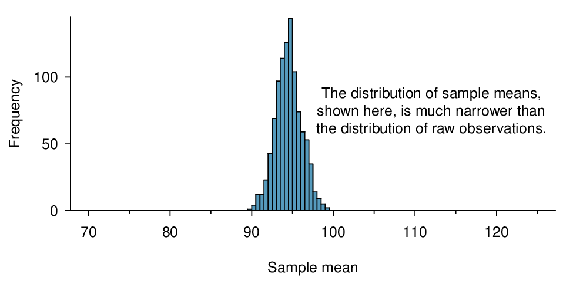
Figure4.2.5.A histogram of 1000 sample means for run time, where the samples are of size \(n=100\text{.}\) This histogram approximates the true sampling distribution of the sample mean, with mean \(\mu_{\bar{x}}\) and standard deviation \(\sigma_{\bar{x}}\text{.}\)
Sampling distribution.
The sampling distribution represents the distribution of the point estimates based on samples of a fixed size from a certain population. It is useful to think of a point estimate as being drawn from such a distribution. Understanding the concept of a sampling distribution is central to understanding statistical inference.
The sampling distribution shown in Figure 4.2.5 is unimodal and approximately symmetric. It is also centered exactly at the true population mean: \(\mu=94.52\text{.}\) Intuitively, this makes sense. The sample mean should be an unbiased estimator of the population mean. Because we are considering the distribution of the sample mean, we will use \(\mu_{\bar{x}} = 94.52\) to describe the true mean of this distribution.
We can see that the sample mean has some variability around the population mean, which can be quantified using the standard deviation of this distribution of sample means. The standard deviation of the sample mean tells us how far the typical estimate is away from the actual population mean, 94.52 minutes. It also describes the typical error of a single estimate, and is denoted by the symbol \(\sigma_{\bar{x}}\text{.}\)
Standard deviation of an estimate.
The standard deviation associated with an estimate describes the typical error or uncertainty associated with the estimate.
Example4.2.6.
Looking at Figure 4.2.4 and Figure 4.2.5, we see that the standard deviation of the sample mean with \(n=100\) is much smaller than the standard deviation of a single sample. Interpret this statement and explain why it is true.
Solution.
The variation from one sample mean to another sample mean is much smaller than the variation from one individual to another individual. This makes sense because when we average over 100 values, the large and small values tend to cancel each other out. While many individuals have a time under 90 minutes, it would be unlikely for the average of 100 runners to be less than 90 minutes.
Checkpoint4.2.7.
(a) Would you rather use a small sample or a large sample when estimating a parameter? Why? (b) Using your reasoning from (a), would you expect a point estimate based on a small sample to have smaller or larger standard deviation than a point estimate based on a larger sample? 2
(a) Consider two random samples: one of size 10 and one of size 1000. Individual observations in the small sample are highly influential on the estimate while in larger samples these individual observations would more often average each other out. The larger sample would tend to provide a more accurate estimate. (b) If we think an estimate is better, we probably mean it typically has less error. Based on (a), our intuition suggests that a larger sample size corresponds to a smaller standard deviation.
When considering how to calculate the standard deviation of a sample mean, there is one problem: there is no obvious way to estimate this from a single sample. However, statistical theory provides a helpful tool to address this issue.
In the sample of 100 runners, the standard deviation of the sample mean is equal to one-tenth of the population standard deviation: \(15.93/10 = 1.59\text{.}\) In other words, the standard deviation of the sample mean based on 100 observations is equal to
where \(\sigma_{x}\) is the standard deviation of the individual observations. This is no coincidence. We can show mathematically that this equation is correct when the observations are independent using the probability tools of Section 3.4.
Computing SD for the sample mean.
Given \(n\) independent observations from a population with standard deviation \(\sigma\text{,}\) the standard deviation of the sample mean is equal to
A reliable method to ensure sample observations are independent is to conduct a simple random sample consisting of less than 10% of the population.
Checkpoint4.2.8.
The average of the runners’ ages is 35.05 years with a standard deviation of \(\sigma = 8.97\text{.}\) A simple random sample of 100 runners is taken. (a) What is the standard deviation of the sample mean? (b) Would you be surprised to get a sample of size 100 with an average of 36 years? 3
Use (4.2.1) with the population standard deviation to compute the standard deviation of the sample mean: \(SD_{y}=8.97 \sqrt{100}=0.90\) years. (b) It would not be surprising. 36 years is about 1 standard deviation from the true mean of 35.05. Based on the 68, 95 rule, we would get a sample mean at least this far away from the true mean approximately 100%-68% = 32% of the time.
Checkpoint4.2.9.
(a) Would you be more trusting of a sample that has 100 observations or 400 observations? (b) We want to show mathematically that our estimate tends to be better when the sample size is larger. If the standard deviation of the individual observations is 10, what is our estimate of the standard deviation of the mean when the sample size is 100? What about when it is 400? (c) Explain how your answer to (b) mathematically justifies your intuition in part (a). 4
(a) Extra observations are usually helpful in understanding the population, so a point estimate with 400 observations seems more trustworthy. (b) The standard deviation of the mean when the sample size is 100 is given by \(SD_{100}=10/ \sqrt{100} = 1\text{.}\) For \(SD_{400}=10 / \sqrt{400}=0.5\text{.}\) The larger sample has a smaller standard deviation ofthe mean. ( c) The standard deviation of the mean of the sample with 400 observations is lower than that of the sample with 100 observations. The standard deviation of \(\bar{x}\) describes the typical error, and since it is lower for the larger sample, this mathematically shows the estimate from the larger sample tends to be better - though it does not guarantee that every large sample will provide a better estimate than a particular small sample.
Subsection4.2.3The Central Limit Theorem Revisted
In Figure 4.2.5, the sampling distribution of the sample mean looks approximately normally distributed. Will the sampling distribution of a mean always be nearly normal? To address this question, we will investigate three cases to see roughly when the approximation is reasonable.
We consider three data sets: one from a uniform distribution, one from an exponential distribution, and the other from a normal distribution. These distributions are shown in the top panels of Figure 4.2.10. The uniform distribution is symmetric, and the exponential distribution may be considered as having moderate skew since its right tail is relatively short (few outliers).
The left panel in the \(n=2\) row represents the sampling distribution of \(\bar{x}\) if it is the sample mean of two observations from the uniform distribution shown. The dashed line represents the closest approximation of the normal distribution. Similarly, the center and right panels of the \(n=2\) row represent the respective distributions of \(\bar{x}\) for data from exponential and log-normal distributions.
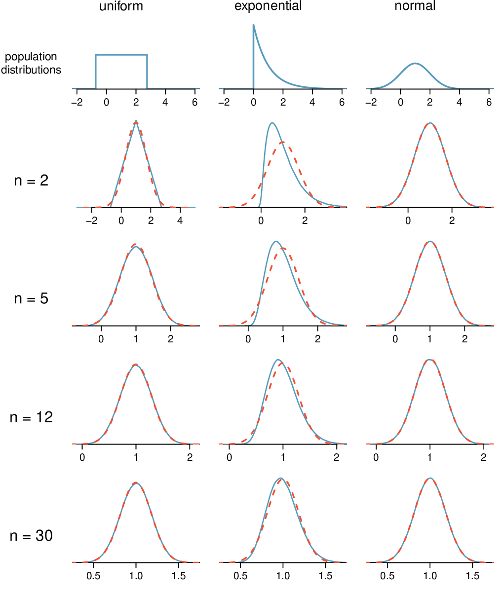
Figure4.2.10.Sampling distributions for the mean at different sample sizes and for three different distributions. The dashed red lines show normal distributions.
Checkpoint4.2.11.
Examine the distributions in each row of Figure 4.2.10. What do you notice about the sampling distribution of the mean as the sample size, \(n\text{,}\) becomes larger? 5
The normal approximation becomes better as larger samples are used. However, in the case when the population is normally distributed, the normal distribution of the sample mean is normal for all sample sizes.
Example4.2.12.
In general, would normal approximation for a sample mean be appropriate when the sample size is at least 30?
Solution.
Yes, the sampling distributions when \(n = 30\) all look very much like the normal distribution.
However, the more non-normal a population distribution, the larger a sample size is necessary for the sampling distribution to look nearly normal.
Determining if the sample mean is normally distributed.
If the population is normal, the sampling distribution of \(\bar{x}\) will be normal for any sample size.
The less normal the population, the larger \(n\) needs to be for the sampling distribution of \(\bar{x}\) to be nearly normal. However, a good rule of thumb is that for almost all populations, the sampling distribution of \(\bar{x}\) will be approximately normal if \(n \ge 30\text{.}\)
This brings us to the Central Limit Theorem, the most fundamental theorem in Statistics.
Central Limit Theorem.
When taking a random sample of independent observations from a population with a fixed mean and standard deviation, the distribution of \(\bar{x}\) approaches the normal distribution as \(n\) increases.
Example4.2.13.
Sometimes we do not know what the population distribution looks like. We have to infer it based on the distribution of a single sample. Figure 4.2.14 shows a histogram of 20 observations. These represent winnings and losses from 20 consecutive days of a professional poker player. Based on this sample data, can the normal approximation be applied to the distribution of the sample mean?
Solution.
We should consider each of the required conditions.
These are referred to as time series data, because the data arrived in a particular sequence. If the player wins on one day, it may influence how she plays the next. To make the assumption of independence we should perform careful checks on such data.
The sample size is 20, which is smaller than 30.
There are two outliers in the data, both quite extreme, which suggests the population may not be normal and instead may be very strongly skewed or have distant outliers. Outliers can play an important role and affect the distribution of the sample mean and the estimate of the standard deviation of the sample mean.
Since we should be skeptical of the independence of observations and the extreme upper outliers pose a challenge, we should not use the normal model for the sample mean of these 20 observations. If we can obtain a much larger sample, then the concerns about skew and outliers would no longer apply.
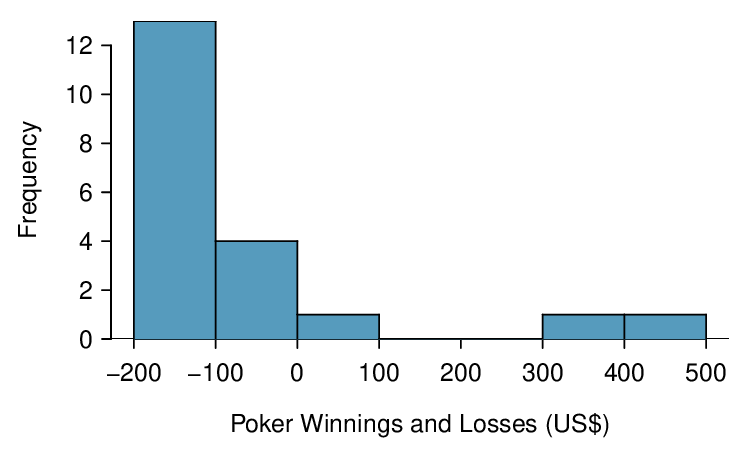
Figure4.2.14.Sample distribution of poker winnings. These data include two very clear outliers. These are problematic when considering the normality of the sample mean. For example, outliers are often an indicator of very strong skew.
Examine data structure when considering independence.
Some data sets are collected in such a way that they have a natural underlying structure between observations, e.g. when observations occur consecutively. Be especially cautious about independence assumptions regarding such data sets.
Watch out for strong skew and outliers.
Strong skew in the population is often identified by the presence of clear outliers in the data. If a data set has prominent outliers, then a larger sample size will be needed for the sampling distribution of \(\bar{x}\) to be normal. There are no simple guidelines for what sample size is big enough for each situation. However, we can use the rule of thumb that, in general, an \(n\) of at least 30 is sufficient for most cases.
Subsection4.2.4Normal approximation for the sampling distribution of \(\bar{x}\)
At the beginning of this chapter, we used normal approximation for populations or for data that had an approximately normal distribution. When appropriate conditions are met, we can also use the normal approximation to estimate probabilities about a sample average. We must remember to verify that the conditions are met and use the mean \(\mu_{\bar{x}}\) and standard deviation \(\sigma_{\bar{x}}\) for the sampling distribution of the sample average.
Three important facts about the distribution of a sample mean \(\bar{x}\).
When the observations can be considered independent, such as from a random sample of less than 10% of the population, the distribution of the sample mean can be described as follows.
The mean of a sample mean is denoted by \(\mu_{\bar{x}}\text{,}\) and it is equal to \(\mu\text{.}\)
The SD of a sample mean is denoted by \(\sigma_{\bar{x}}\text{,}\) and it is equal to \(\frac{\sigma}{\sqrt{n}}\text{.}\)
When the population is normal or when \(n\ge 30\text{,}\) the sample mean closely follows a normal distribution.
Example4.2.15.
In the 2012 Cherry Blossom 10 mile run, the average time for all of the runners is 94.52 minutes with a standard deviation of 8.97 minutes. The distribution of run times is approximately normal. Find the probabiliy that a randomly selected runner completes the run in less than 90 minutes.
Solution.
Because the distribution of run times is approximately normal, we can use normal approximation.
There is a 30.72% probability that a randomly selected runner will complete the run in less than 90 minutes.
Example4.2.16.
Find the probabiliy that the average of 20 runners is less than 90 minutes.
Solution.
Here, \(n=20\lt 30\text{,}\) but the distribution of the population, that is, the distribution of run times is stated to be approximately normal. Because of this, the sampling distribution will be normal for any sample size.
There is a 1.23% probability that the average run time of 20 randomly selected runners will be less than 90 minutes.
Example4.2.17.
The average of all the runners’ ages is 35.05 years with a standard deviation of \(\sigma = 8.97\text{.}\) The distribution of age is somewhat skewed. What is the probability that a randomly selected runner is older than 37 years?
Solution.
Because the distribution of age is skewed and is not normal, we cannot use normal approximation for this problem. In order to answer this question, we would need to look at all of the data.
Checkpoint4.2.18.
What is the probability that the average of 50 randomly selected runners is greater than 37 years? 6
Because \(n = 50 \ge 30\text{,}\) the sampling distribution of the mean is approximately normal, so we can use normal approximation for this problem. The mean is given as 35.05 years. \(\sigma_{x} = \frac{\sigma}{\sqrt{n}} = \frac{8.97}{\sqrt{50}} = 1.27\text{,}\)\(z = \frac{\bar{x} - \mu_{x}}{\sigma_{x}} = \frac{37-35.05}{1.27} = 1.535\text{,}\)\(P(Z>1.535)=0.062\) There is a 6.2% chance that the average age of 50 runners will be greater than 37.
Remember to divide by \(\sqrt{{n}}\).
When finding the probability that an average or mean is greater or less than a particular value, remember to divide the standard deviation of the population by \(\sqrt{n}\) to calculate the correct SD.
Subsection4.2.5Section summary
The symbol \(\bar{x}\) denotes the sample average. \(\bar{x}\) for any particular sample is a number. However, \(\bar{x}\) can vary from sample to sample. The distribution of all possible values of \(\bar{x}\) for repeated samples of a fixed size from a certain population is called the sampling distribution of \(\bar{x}\text{.}\)
The standard deviation of \(\bar{x}\) describes the typical error or distance of the sample mean from the population mean. It also tells us how much the sample mean is likely to vary from one random sample to another.
The standard deviation of \(\bar{x}\) will be smaller than the standard deviation of the population by a factor of \(\sqrt{n}\text{.}\) The larger the sample, the better the estimate tends to be.
Consider taking a simple random sample from a population with a fixed mean and standard deviation. The Central Limit Theorem ensures that regardless of the shape of the original population, as the sample size increases, the distribution of the sample average \(\bar{x}\) becomes more normal.
Three important facts about the sampling distribution of the sample average \(\bar{x}\text{:}\)
The mean of a sample mean is denoted by \(\mu_{\bar{x}}\text{,}\) and it is equal to \(\mu\text{.}\) (center)
The SD of a sample mean is denoted by \(\sigma_{\bar{x}}\text{,}\) and it is equal to \(\frac{\sigma}{\sqrt{n}}\text{.}\) (spread)
When the population is normal or when \(n\ge 30\text{,}\) the sample mean closely follows a normal distribution. (shape)
These facts are used when solving the following two types of normal approximation problems involving a sample mean or a sample sum.
Find the probability that a sample average will be greater/less than a certain value.
Verify that the population is approximately normal or that \(n \ge 30\text{.}\)
Calculate the Z-score. Use \(\mu_{\bar{x}}=\mu\) and \(\sigma_{\bar{x}}=\frac{\sigma}{\sqrt{n}}\) to standardize the sample average.
Find the appropriate area under the normal curve.
Find the probability that a sample sum/total will be greater/less than a certain value.
Convert the sample sum into a sample average, using \(\bar{x} = \frac{sum}{n}\text{.}\)
Do steps 1-3 from Part A above.
Exercises4.2.6Exercises
1.Ages of pennies, Part I.
The histogram below shows the distribution of ages of pennies at a bank.
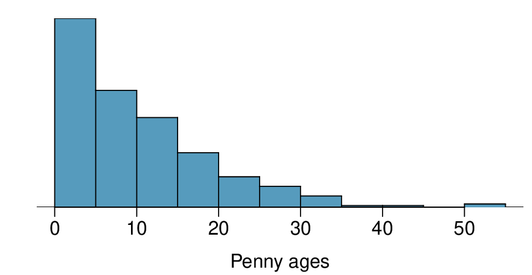
Describe the distribution.
Sampling distributions for means from simple random samples of 5, 30, and 100 pennies is shown in the histograms below. Describe the shapes of these distributions and comment on whether they look like what you would expect to see based on the Central Limit Theorem.
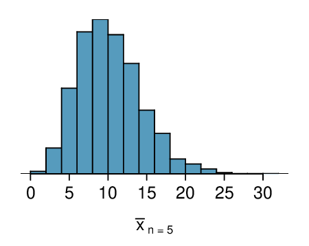
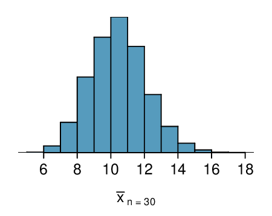
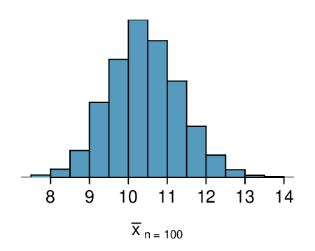
Solution.
The distribution is unimodal and strongly right skewed with a median between 5 and 10 years old. Ages range from 0 to slightly over 50 years old, and the middle 50% of the distribution is roughly between 5 and 15 years old. There are potential outliers on the higher end.
When the sample size is small, the sampling distribution is right skewed, just like the population distribution. As the sample size increases, the sampling distribution gets more unimodal, symmetric, and approaches normality. The variability also decreases. This is consistent with the Central Limit Theorem.
2.Ages of pennies, Part II.
The mean age of the pennies from Exercise 4.2.6.1 is 10.44 years with a standard deviation of 9.2 years. Using the Central Limit Theorem, calculate the means and standard deviations of the distribution of the mean from random samples of size 5, 30, and 100. Comment on whether the sampling distributions shown in Exercise 4.2.6.1 agree with the values you compute.
3.Housing prices.
A housing survey was conducted to determine the price of a typical home in Topanga, CA. The mean price of a house was roughly $1.3 million with a standard deviation of $300,000. There were no houses listed below $600,000 but a few houses above $3 million.
Is the distribution of housing prices in Topanga symmetric, right skewed, or left skewed? Hint: Sketch the distribution.
Would you expect most houses in Topanga to cost more or less than $1.3 million?
Can we estimate the probability that a randomly chosen house in Topanga costs more than $1.4 million using the normal distribution?
What is the probability that the mean of 60 randomly chosen houses in Topanga is more than $1.4 million?
How would doubling the sample size affect the standard deviation of the mean?
Solution.
Right skewed. There is a long tail on the higher end of the distribution but a much shorter tail on the lower end.
Less than, as the median would be less than the mean in a right skewed distribution.
We should not.
Even though the population distribution is not normal, the conditions for inference are reasonably satisfied, with the possible exception of skew. If the skew isn’t very strong (we should ask to see the data), then we can use the Central Limit Theorem to estimate this probability. For now, we’ll assume the skew isn’t very strong, though the description suggests it is at least moderate to strong. Use \(N(1.3, SD_{\bar{x}} = 0.3/ \sqrt{60})\text{:}\)\(Z = 2.58 \rightarrow 0.0049\text{.}\)
It would decrease it by a factor of \(\sqrt{2}\text{.}\)
4.Stats final scores.
Each year about 1500 students take the introductory statistics course at a large university. This year scores on the final exam are distributed with a median of 74 points, a mean of 70 points, and a standard deviation of 10 points. There are no students who scored above 100 (the maximum score attainable on the final) but a few students scored below 20 points.
Is the distribution of scores on this final exam symmetric, right skewed, or left skewed?
Would you expect most students to have scored above or below 70 points?
Can we calculate the probability that a randomly chosen student scored above 75 using the normal distribution?
What is the probability that the average score for a random sample of 40 students is above 75?
How would cutting the sample size in half affect the standard deviation of the mean?
5.Identify distributions, Part I.
Four plots are presented below. The plot at the top is a distribution for a population. The mean is 10 and the standard deviation is 3. Also shown below is a distribution of (1) a single random sample of 100 values from this population, (2) a distribution of 100 sample means from random samples with size 5, and (3) a distribution of 100 sample means from random samples with size 25. Determine which plot (A, B, or C) is which and explain your reasoning.
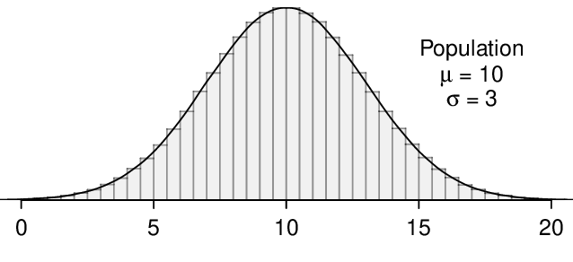
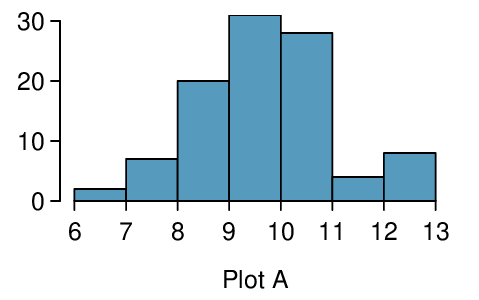
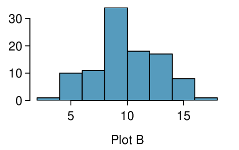
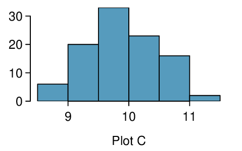
Solution.
The centers are the same in each plot, and each data set is from a nearly normal distribution, though the histograms may not look very normal since each represents only 100 data points. The only way to tell which plot corresponds to which scenario is to examine the variability of each distribution. Plot B is the most variable, followed by Plot A, then Plot C. This means Plot B will correspond to the original data, Plot A to the sample means with size 5, and Plot C to the sample means with size 25.
6.Identify distributions, Part II.
Four plots are presented below. The plot at the top is a distribution for a population. The mean is 60 and the standard deviation is 18. Also shown below is a distribution of (1) a single random sample of 500 values from this population, (2) a distribution of 500 sample means from random samples of each size 18, and (3) a distribution of 500 sample means from random samples of each size 81. Determine which plot (A, B, or C) is which and explain your reasoning.
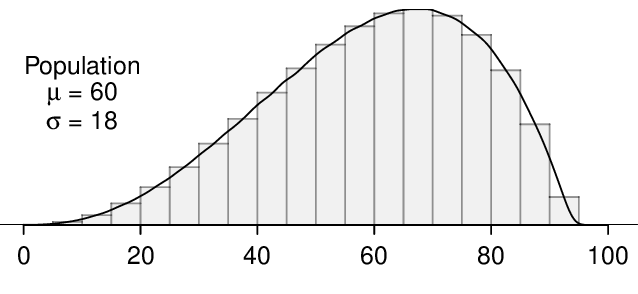
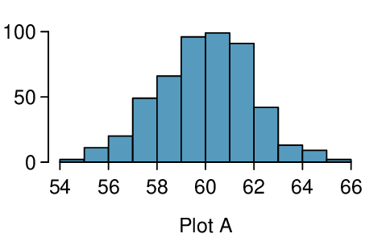
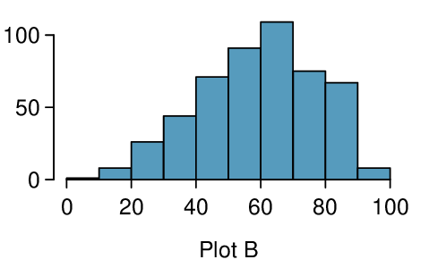
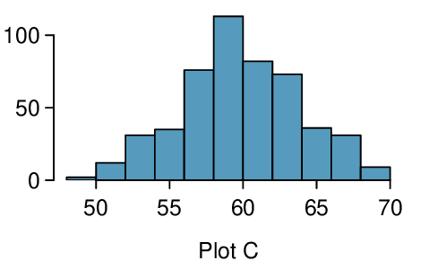
7.Weights of pennies.
The distribution of weights of United States pennies is approximately normal with a mean of 2.5 grams and a standard deviation of 0.03 grams.
What is the probability that a randomly chosen penny weighs less than 2.4 grams?
Describe the sampling distribution of the mean weight of 10 randomly chosen pennies.
What is the probability that the mean weight of 10 pennies is less than 2.4 grams?
Sketch the two distributions (population and sampling) on the same scale.
Could you estimate the probabilities from (a) and (c) if the weights of pennies had a skewed distribution?
Solution.
\(Z = -3.33 \rightarrow 0.0004\text{.}\)
The population SD is known and the data are nearly normal, so the sample mean will be nearly normal with distribution \(N(\mu, \sigma)\text{;}\)\(N(2.5, 0.0095).\)
\(Z = -10.54 \rightarrow \approx 0\text{.}\)
See below:
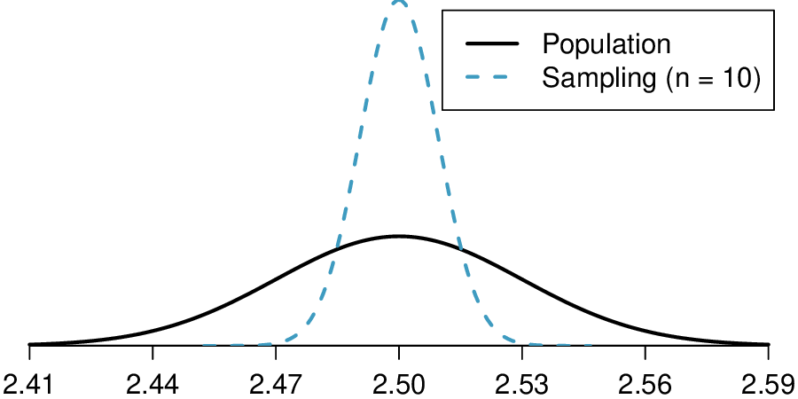
We could not estimate (a) without a nearly nomal population distribution. We also could not estimate (c) since the sample size is not sufficient to yield a nearly normal sampling distribution if the population distribution is not nearly normal.
8.CFLBs.
A manufacturer of compact fluorescent light bulbs advertises that the distribution of the lifespans of these light bulbs is nearly normal with a mean of 9,000 hours and a standard deviation of 1,000 hours.
What is the probability that a randomly chosen light bulb lasts more than 10,500 hours?
Describe the distribution of the mean lifespan of 15 light bulbs.
What is the probability that the mean lifespan of 15 randomly chosen light bulbs is more than 10,500 hours?
Sketch the two distributions (population and sampling) on the same scale.
Could you estimate the probabilities from parts (a) and (c) if the lifespans of light bulbs had a skewed distribution?
9.Songs on an iPod.
Suppose an iPod has 3,000 songs. The histogram below shows the distribution of the lengths of these songs. We also know that, for this iPod, the mean length is 3.45 minutes and the standard deviation is 1.63 minutes.
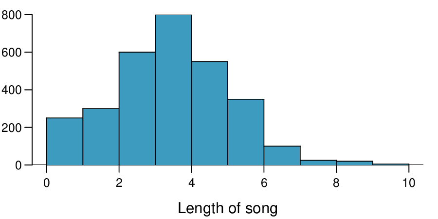
Estimate the probability that a randomly selected song lasts more than 5 minutes.
You are about to go for an hour run and you make a random playlist of 15 songs. What is the probability that your playlist lasts for the entire duration of your run? Hint: If you want the playlist to last 60 minutes, what should be the minimum average length of a song?
You are about to take a trip to visit your parents and the drive is 6 hours. You make a random playlist of 100 songs. What is the probability that your playlist lasts the entire drive?
Solution.
We cannot use the normal model for this calculation, but we can use the histogram. About 500 songs are shown to be longer than 5 minutes, so the probability is about \(500/3000 = 0.167\text{.}\)
Two different answers are reasonable. Option 1: Since the population distribution is only slightly skewed to the right, even a small sample size will yield a nearly normal sampling distribution. We also know that the songs are sampled randomly and the sample size is less than 10% of the population, so the length of one song in the sample is independent of another. We are looking for the probability that the total length of 15 songs is more than 60 minutes, which means that the average song should last at least \(60/15 = 4\) minutes. Using \(SD_{x} = 1.63/\sqrt{15}\text{,}\)\(Z = 1.31 \rightarrow 0.0951\text{.}\) Option 2: Since the population distribution is not normal, a small sample size may not be sufficient to yield a nearly normal sampling distribution. Therefore, we cannot estimate the probability using the tools we have learned so far.
We can now be confident that the conditions are satisfied. \(Z = 0.92 \rightarrow 0.1788\text{.}\)
10.Spray paint, Part II.
As described in Exercise 3.4.11.10, the area that can be painted using a single can of spray paint is slightly variable and follows a nearly normal distribution with a mean of 25 square feet and a standard deviation of 3 square feet.
What is the probability that the area covered by a can of spray paint is more than 27 square feet?
Suppose you want to spray paint an area of 540 square feet using 20 cans of spray paint. On average, how many square feet must each can be able to cover to spray paint all 540 square feet?
What is the probability that you can cover a 540 square feet area using 20 cans of spray paint?
If the area covered by a can of spray paint had a slightly skewed distribution, could you still calculate the probabilities in parts (a) and (c) using the normal distribution?
11.Wireless routers.
John is shopping for wireless routers and is overwhelmed by the number of available options. In order to get a feel for the average price, he takes a random sample of 75 routers and finds that the average price for this sample is $75 and the standard deviation is $25.
Based on this information, how much variability should he expect to see in the mean prices of repeated samples, each containing 75 randomly selected wireless routers?
A consumer website claims that the average price of routers is $80. Is a true average of $80 consistent with John’s sample?
\(Z = 1.73\text{,}\) which indicates that the two values are not unusually distant from each other when accounting for the uncertainty in John’s point estimate.
12.Betting on dinner, Part II.
Exercise 3.4.11.12 introduces a promotion at a restaurant where prices of menu items are determined randomly following some underlying distribution. We are told that the price of basket of fries is drawn from a normal distribution with mean 6 and standard deviation of 2. You want to get 5 baskets of fries but you only have $28 in your pocket. What is the probability that you would have enough money to pay for all five baskets of fries?